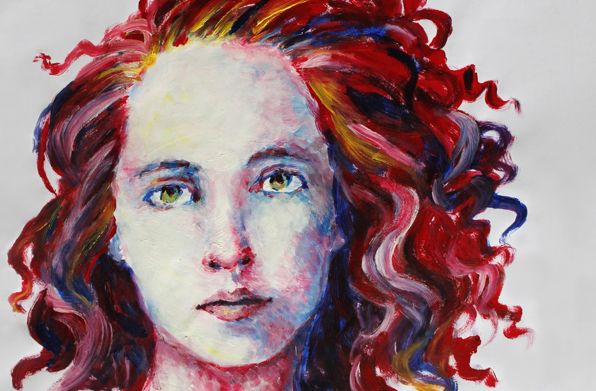
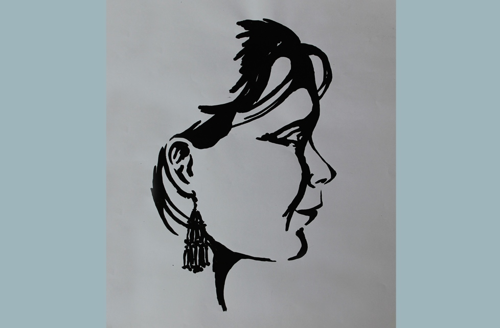
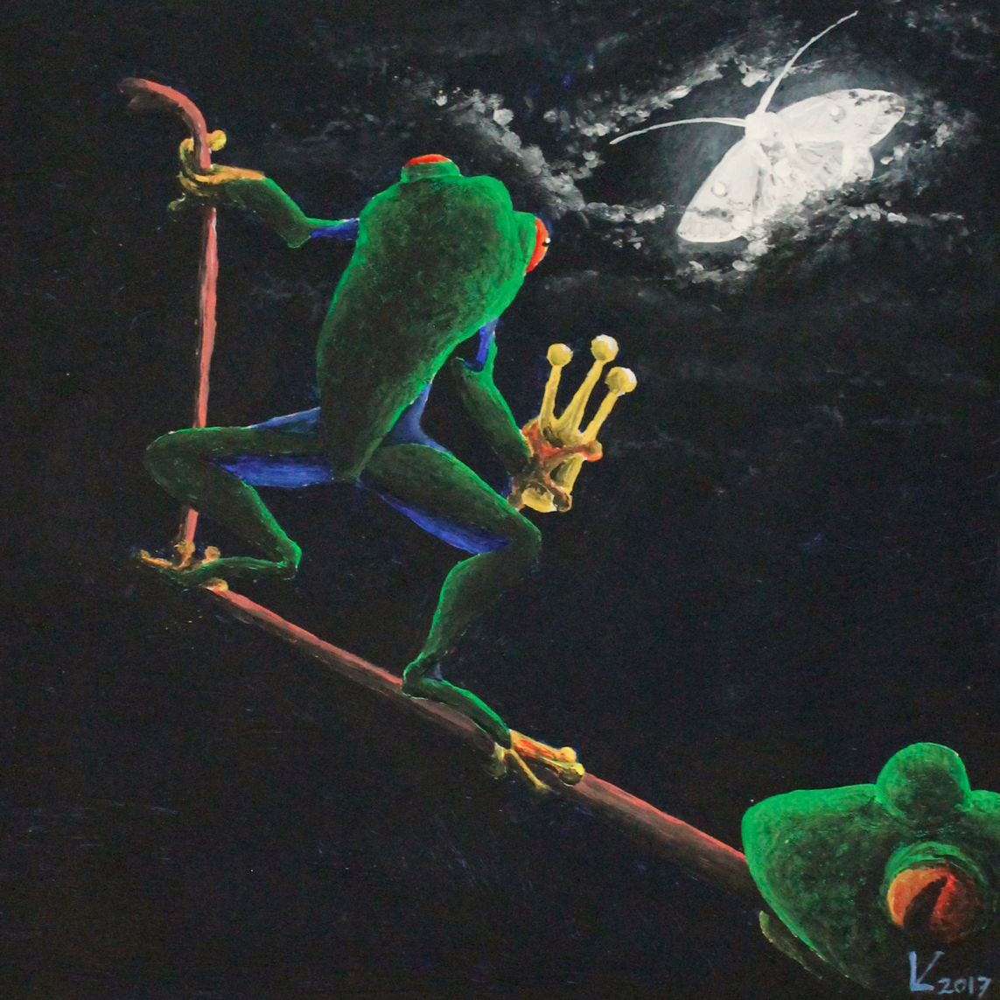
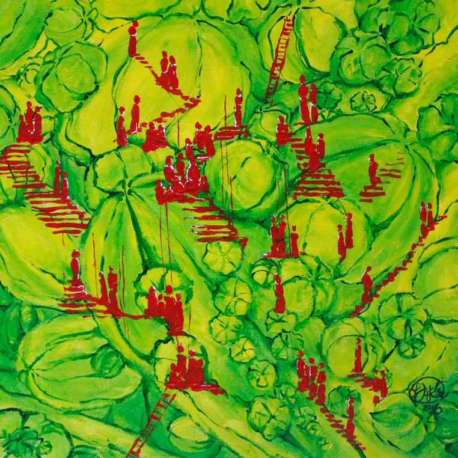

Malerei
Gesichter
Menschen und im Besonderen ihre Gesichter haben mich schon immer fasziniert, weshalb sich unter meinen Arbeiten auch immer wieder Portraits finden lassen. Dabei mit den Farben zu spielen, macht mir in der Malerei besonderen Spaß.

Selbstportrait, Acryl auf Papier, 2015

Anja, Acryl auf Papier, 2015

Sie, Acryl auf Leinwand, 2016
Surrealität
Ich bilde die Wirklichkeit gerne auf meine eigene, fantasievolle Weise ab, verzerre und verdrehe sie in meinen Bildern. Der Surrealismus in der Kunst hat mich daher schon immer fasziniert und ich bringe ganz gerne einzelne Aspekte dieser Kunstrichtung in meine Arbeiten ein.

Mondsüchtig, Acryl auf Papier, 2017

Kakteen, Acryl auf Leinwand, 2016

Vergänglichkeit, Acryl auf Leinwand, 2014